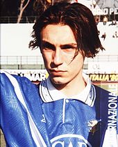

Nella stagione 1994-1995 ha ottenuto la sua prima presenza tra i professionisti, quando il 21 maggio 1995, con il Brescia già retrocesso, ha esordito in Serie A sostituendo Marco Schenardi nella partita Reggiana-Brescia (2-0) disputata allo Stadio Giglio, diventando a 16 anni e 2 giorni il più giovane esordiente della squadra lombarda nella massima serie.La stagione seguente non è mai stato impiegato con la prima squadra, mentre con la formazione Primavera ha vinto il Torneo di Viareggio. Nella stagione 1996-1997 è entrato a far parte della prima squadra, sotto la guida dell'allenatore Edoardo Reja, e con 17 presenze e 2 reti ha contribuito alla promozione del Brescia, che ha vinto il campionato di Serie B. La stagione seguente è stato impiegato con continuità nella massima serie, dove ha realizzato 4 gol in 29 presenze il primo dei quali in Brescia-Vicenza 4-0 del 19 ottobre 1997, quando il giovane centrocampista bresciano ha chiuso le marcature per le "rondinelle". A fine stagione il Brescia è nuovamente retrocesso nella categoria cadetta.
